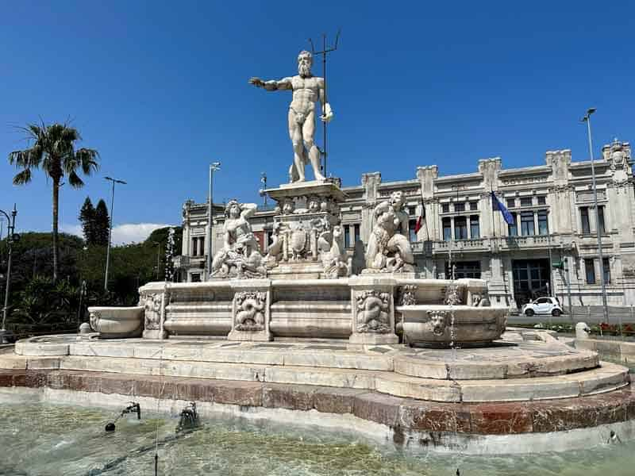
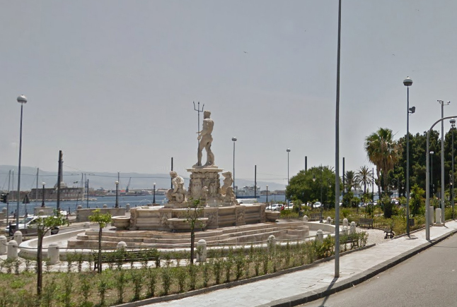

Piazza Unità d’Italia
 Messina
Messina

Messina è una città portuale nella Sicilia nord-orientale, separata dall'Italia continentale dallo Stretto di Messina. È nota per il Duomo di Messina, di epoca normanna, caratterizzato da portale gotico, finestre del XV secolo e orologio astronomico sul campanile. Nelle vicinanze si trovano fontane in marmo decorate con figure mitologiche, come la Fontana di Orione, con le sue iscrizioni scolpite, e la Fontana del Nettuno, sormontata da una statua del dio del mare.

Messina